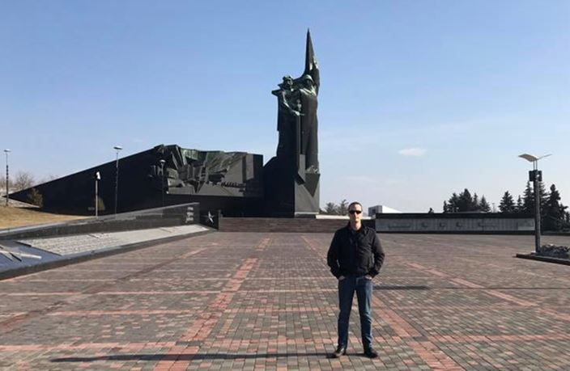

Après trois ans de fouilles, Pierre Malinowski, historien français, a découvert les restes d’un soldat du Corps Expéditionnaire Russe dans le champ de Cormicy. Celui-ci était tombé le 19 avril 1917 lors de l’attaque du Mont Spin, durant la bataille du Chemin des Dames et la fameuse offensive Nivelle. Nous avions présenté le déroulement de ces recherches dans son article « Le soldat russe oublié… » (revue « Sans Frontières », décembre 2016, http://revuemethode.org/sf121622.html). Mais à la date de publication, ses recherches n’avaient pu aboutir qu’à quelques équipements matériels ou vestimentaires.
Crédit : Pierre Malinowski
Pourtant, quelques jours après la publication de cet article, l’objet essentiel de sa recherche fut atteint : celui de pouvoir découvrir la dépouille d’un soldat du Corps expéditionnaire russe. Le 24 décembre 2016, veille de Noël, notre historien a ouvert une tranchée allemande à 1m80 de profondeur. Une colonne vertébrale est apparue et il a cru d’abord à un soldat allemand. Mais des objets étaient visibles comme des boutons d’uniforme frappés d’une aigle bicéphale, une ceinture correspondant à l’uniforme russe, des munitions et une croix orthodoxe sont sortis de la craie. « En voyant la croix j’ai pensé que cet homme l’a embrassée juste avant de partir à l’assaut, et 30 minutes après il a été tué » nous confie Pierre Malinowski. Il avait réussi à atteindre son objectif. Ce soldat était bien un Russe venu combattre en France.
Tranchée où était trouvé le soldat russe
Découverte des boutons d’uniforme et d’une croix orthodoxe de soldat russe
Faisant suite à sa découverte, Pierre Malinowski a réalisé une vidéo très touchante en hommage aux milliers de soldats russes, français et allemands qui ont passé leur dernier Noël il y a un siècle dans les tranchées avant de se massacrer quelques mois plus tard lors de l'attaque Nivelle en 1917.
Captures d’écran de vidéo de Pierre Malinowski dédiée au dernier Noël des soldats russes, français et allemand
Le 17 janvier les restes du corps du soldat ont été extraits. Nous pourrions aisément imaginer ce soldat de 20 à 30 ans, parti d’Arkhangelsk à Brest en juillet 1916 avec la 3ème brigade du Corps expéditionnaire russe : il était petit et très costaud. Tué sur la ligne de front quelques minutes après le début de l’attaque. Pris sous le feu ardent de l’artillerie allemande, il a perdu ses deux jambes et son crâne a été enfoncé par un éclat d'obus.
Au début de mois de mars Pierre Malinowski est arrivé à Donetsk. Il a visité plusieurs endroits historiques et culturels. Durant une balade dans le centre-ville, il a remarqué que Donetsk est « Une ville normale, propre, où tout fonctionne. Une population très accueillante malgré la guerre à quelques kilomètres où là c'est un carnage ».

Pierre Malinowski près du monument « À tes libérateurs, Donbass », consacré à la Grande Guerre Patriotique
Le 6 mars l’Institut Franco-Russe de Donetsk a invité des étudiants et des professeurs, ainsi que des passionnés d’histoire, au sein de l’Université Nationale Technique de Donetsk, à participer à la conférence de Monsieur Malinowski intitulée « Le sacrifice des soldats du Corps Expéditionnaire Russe en France durant la 1ère Guerre Mondiale ». Les invités ont eu la possibilité unique de découvrir beaucoup de faits intéressants concernant le Corps Expéditionnaire Russe en France mais également le déroulement des fouilles archéologiques. Son intervention a provoqué un grand intérêt et fait l’objet de riches échanges. Monsieur Malinowski nous a par ailleurs permis de découvrir la vie de Mikhaïl Kritchevski, né en 1897 et mort en 2008 à 111 ans à Donetsk. Il était le dernier vétéran de l'Empire russe tsariste de la 1ère guerre mondiale (engagé en 1917) : un fait malheureusement méconnu au Donbass.
Conférence de Pierre Malinowski organisée par l’Institut Franco-Russe de Donetsk
Pierre Malinowski avec François Mauld d'Aymée, professeur de la langue française à l'Université Nationale Technique de Donetsk
Le 7 mars Monsieur Malinowski avec l’équipe de journalistes de l’agence Novorossia accompagné par Oleg Morgoun, maire d’Iassinovataïa, est allé voir Iassinovataïa, Spartak et Mineralnoïe, les principales cités qui se trouvant en proximité immédiate du front. Il a pu constater que la situation y était encore extrêmement difficile. Il a ainsi pu découvrir que les habitants de ces quartiers sont encore aujourd’hui à vivre sous les pilonnages violents de l’armée ukrainienne : des maisons détruites, des problèmes avec l’eau, le chauffage, le gaz et l’électricité. Et malgré cela, au milieu de cette horreur, des enfants continuent leurs études et des habitants espèrent toujours un retour de la paix.
Les enfants de l’école de Mineralnoïe réfugiés dans l'abri sous-terrain lors des bombardements ukrainiens
Pierre Malinowski a pu enfin communiquer avec les responsables politiques de la République Populaire de Donetsk : Alexandre Kostenko, chefs de fraction « Donetskaya respoublika » et Vladislav Berditchevskiy, député de fraction « Svobodniy Donbass » et Denis Pouchiline, Président du Conseil populaire de la République populaire de Donetsk. Echanges au cours desquels, ils ont discuté des orientations éventuelles de coopération dans les domaines politique, social et culturel.
Rencontre avec Alexandre Kostenko et Vladislav Berditchevskiy
Pierre Malinowski et Denis Pouchiline
Le 8 mars, durant une conférence de presse, il a révélé ses impressions positives concernant ces rencontres. Il a pu apprécier des personnes s’engageant avec dévouement dans le gouvernement de leur pays. Il a remarqué que notre jeunesse était très cultivée et a été surpris que les habitants s’intéressent autant à la politique internationale. Frappé par la situation et les souffrances des civils dans les zones bombardées, il a promis de témoigner de tout ce qu’il avait pu voir à la communauté française. Toutefois ce ne sera pas, semble-t-il, la dernière visite de Pierre Malinowski, car celui-ci planifie déjà de pouvoir prochainement organiser une nouvelle mission au Donbass.
Conférence de presse
A l’issue de la conférence de presse, Pierre Malinowski a continué à profiter de chaque instant passé au Donbass pour mieux connaître la ville de Donetsk et parler avec des habitants. Il s’est rendu au quartier Oktiabrskiy, dans la zone civile qui se trouve près de l’aéroport. Ici encore, il y a peu de temps, il y avait des batailles sanglantes. Pourtant les pilonnages ne s’arrêtent pas.
Pierre avec les enfants de quartier Oktiabrskiy
Aéroport, monastère et cimetière détruits
Avant son départ, Pierre Malinowski nous avait fait le plaisir de répondre à la rédaction de
« Sans Frontières.»
Elena Sydorova : Veuillez nous dire sur vous : votre famille, votre jeunesse, votre parcours professionnel.
Pierre Malinowski : Je suis né à Reims et j'ai vécu toute ma jeunesse à la campagne. Je suis issu d’une famille de trois enfants. J’ai un petit frère qui est dans la police et une grande sœur qui a fait des études de Lettres. Un père spécialiste de la 1ère Guerre Mondiale et une mère parfaite (ce mot la définie très bien). J'ai passé ma jeunesse à faire du sport, à creuser sur les champs de bataille de la 1ère Guerre mondiale et à apprendre le travail manuel avec mon père tous les week-ends end après les cours car pour lui, il fallait autant faire travailler son cerveau que ses mains.
Peu discipliné et assez sanguin, j'ai décidé après le lycée de m'engager directement dans l’armée. A dix-sept ans et demi je me suis engagé dans la Légion étrangère. Puis j'ai rejoint de l’Armée de terre, où je suis resté huit ans dont une grande partie en opérations extérieures. J'ai passé toutes mes qualifications et diplômes au sein de l'Armée. A l’issue j’ai fait mon entrée au Parlement Européen comme attaché parlementaire. Après deux années, j'ai quitté cette activité pour réaliser mes recherches afin de retrouver un soldat russe. Projet qui s'est concrétisé le 24 décembre dernier. Pour l'avenir, j'ai de nombreuses idées mais ce sera en rapport avec la Russie. Obligatoirement.
E.S. : De quelle région de France vous êtes d’origine ? Comment vous pourriez la présenter ?
P.M. : Je suis originaire d’un petit village de l’Aisne à 15 km de Reims, Orainville. C’est un village chargé d'Histoire où la Guerre de 14 a fait des ravages. Ce village était occupé par les Allemands car il n’était pas loin de la ligne de front. D’ailleurs le grand écrivain allemand Ernst Jünger a vécu à 15 mètres de chez moi, dans l'ancien château C’est la plus belle région du monde, pour moi. Tellement chargée d’histoire. Il y a eu Jules César, Charlemagne, Jeanne d'Arc, Napoléon....Et Reims? Avec sa cathédrale de Reims où presque tous les rois y ont été sacrés. Oui j'aime beaucoup ma région et j'espère y vivre plus tard.
E.S. : Pourquoi vous êtes passionné par l’histoire, et notamment le sujet du Corps Expéditionnaire Russe qui sont venu en France pendant la Première Guerre Mondiale ?
P.M. : Je suis passionné par l’histoire parce mon père a travaillé vingt ans au Service historique de l’Armée de terre, aux archives de Vincennes. Quand j’étais petit cela m’ennuyait car il y avait des archives partout à la maison et je n’y comprenais rien. Il y en avait vraiment partout : des plans, des comptes rendus de prisonniers… et cela nous ennuyait quand il nous disait le week-end que l’on allait trier les archives avec lui … Pour nous c’était une corvée.
Puis on a commencé à s’y intéresser avec mon frère, à comprendre cet engouement.
Ce que l’on aimait bien c’est quand il nous emmenait avec mon frère sur le terrain ramasser des cartouches dans les champs. Ensuite, nous y sommes allés seuls et nous continuer durant des années, jusqu'à aujourd'hui.
En ce qui concerne le Corps Expéditionnaire, ma passion est venue, vers 2013, quand mon père m’a dit : « Tu sais qu’il y a des Russes qui sont morts ici » et qu'il a commencé à me donner des plans et des récits. Je n’imaginais pas que des soldats russes soient venus de si loin pour combattre et mourir ici, pas plus que je n’imaginais que je serai amené à me rendre en Russie 35 fois dans les 3 années suivantes.
E.S. : Quel message principal vous vouliez transmettre à nos étudiants et nos professeurs par votre conférence à Donetsk ?
P.M. : Le principal message que j’ai souhaité transmettre aux étudiants et aux professeurs durant ma conférence à Donetsk était surtout de leur montrer que des Européens pensent à eux et ne les stigmatisent pas. Qu'on peut faire abstraction de la politique à travers l'Histoire, la culture... J'ai apprécié leur enthousiasme de voir qu'un Français vienne dans cette zone de guerre, complétement oubliée du monde entier, pour leur faire cette conférence sur notre histoire commune. Je voulais leur montrer qu'ils avaient toutes les raisons de pouvoir être fier de leur Histoire. J’étais fier d’expliquer ce passé et surtout de leurs apprendre que le dernier vétéran Russe de la Première Guerre Mondiale, était natif de Donetsk et mort dans cette même ville en 2008 à presque 112 ans. J’espère vraiment qu’il y aura d’autres conférences.
E.S. : À votre avis, quels sont des points communs dans la culture russe et française et quels points nous distinguent mais nous attirent ?
P.M. : La culture. Nous avons tous les deux une très grande culture quelle soit Littéraire, musicale, Architecturale et j'en passe. Une culture très éloignée mais tellement proche à la fois. Et nous ne pouvons pas oublier l'Histoire. Nous nous sommes aimés, détestés, pardonnés. Nous nous sommes combattus, envahis, détruits puis alliés et défendu l'un et l'autre. Nous avons un grand respect et une certaine admiration l’un pour l’autre. Chacun de nous pense être le plus beau pays du monde. Ce n'est pas un patriotisme exacerbé mais une fierté de notre Histoire, de notre culture. Bon je ne veux pas créer un nouveau conflit mais pour la Gastronomie, désolé mais nous sommes au-dessus.
P.M. : Les projets franco-russes que je suis actuellement sont prioritairement les commémorations du centenaire qui arrivent dans trois semaines. J’ai aussi pour projet de faire venir, cet été, dix étudiants de Russie pour venir, durant un mois, creuser avec moi sur les traces des soldats russes. Enfin, au plus proche, c’est la reconstitution historique qui se déroulera le 17 avril prochain à Courcy, l'Ambassade de Russie et le village de Courcy ont fait un travail exceptionnel.
E.S. : Comment vous pourriez décrire la ville de Donetsk en quelques mots-clés ?
P.M. : Une population très amicale, très accueillante, des filles magnifiques. On a envie vraiment d’y rester plus longtemps, dommage d’ailleurs qu’il y ait un couvre-feu le soir. Des gens cultivés qui connaissent très bien la situation internationale.
D’ailleurs j'ai été surpris par ces babouchkas à Spartak qui connaissent la politique en France et qui me disaient qu’il ne fallait pas voter pour Macron parce que ce sera dangereux pour nous..
E.S. : Quels livres vous inspirent ?
P.M. : Orage d’acier d’Ernst Jünger. C’est un livre de référence pour moi qui m’a ouvert les yeux sur la première guerre mondiale. C’était l’un des nombreux livres que j’ai apprécié mais si je ne devais pouvoir en prendre qu’un avec moi ce serait celui-ci.
E.S. : Quels sont vos prochains projets ?
P.M. : Il y'a le projet avec les jeunes Russes cet été puis j'aimerais pouvoir venir m’installer à Donetsk afin de venir y enseigner une année à l’Université pour y apprendre le russe. Cela dépendra de plusieurs choses Et pour les autres projets, il y'en a tellement qu'il me faudrait 10 pages pour les énumérer.
E.S. : Merci pour cet échange Monsieur Malinowski. Nous vous souhaitons bonne chance pour la concrétisation de tous ces beaux projets.
Après le retour de Pierre Malinowski en France, le 22 mars, le soldat russe inconnu a été inhumé au cimetière militaire de Saint-Hilaire-le-Grand, dans la Marne, près de Reims, en présence du Ministre des anciens combattants et de l'Ambassadeur de la Fédération de Russie en France.
Tombe du soldat russe inconnu
Alexandre Orlov, Ambassadeur de la Fédération de Russie en France
Partager cette page